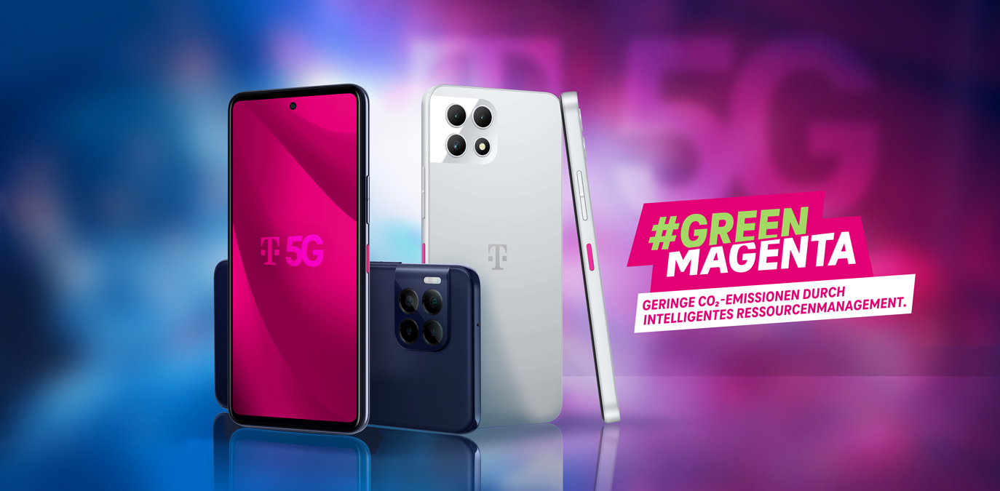

Ab 23. Mai kommen neue T Phones bei Magenta, das T Phone 2 und T Phone 2 Pro

Was bislang über die neuen Geräte bekannt gegeben wurde:
Prozessor: Snapdragon 6 Gen 1 (Vorgänger Mediatek Dimensity 700)
Arbeitsspeicher: T Phone 2 6 GB und T Phone 2 Pro 8 GB (jeweils +2GB gegenüber Vorgänger)
Display: T Phone 2 6,6" FHD+ 120 Hz LCD und T Phone 2 Pro 6,8" FHD+ 120 Hz AMOLED (Vorgänger 6,52" HD+ 60 Hz LCD bzw. 6,82" HD+ 60 Hz LCD)
SIM: Dual SIM mit nano SIM + eSIM (Vorgänger: Single SIM mit nano SIM)
Hauptkamera Rückseite: T Phone 2 50 MP und T Phone 2 Pro 50 MP inkl. OIS (T Phone ident zum Vorgänger, T Phone Pro neu mit OIS)
Weitere Kameras Rückseite: T Phone 2 2 MP Tiefenkamera & 2 MP Makrokamera und T Phone 2 Pro 5 MP Superweitwinkel, 2 MP Tiefenkamera & 2 MP Makrokamera (ident zum Vorgänger)
Kamera Vorderseite: T Phone 2 8 MP und T Phone 2 Pro 16 MP (kein Unterschied zum Vorgänger T Phone 2023, aber zum T Phone 2022 +6 MP, beim Pro kein Unterschied)
Speicher: T Phone 2 128 GB + microSD und T Phone 2 Pro 256 GB + microSD (kein Unterschied zum Vorgänger T Phone (Pro) 2023, aber zum T Phone (Pro) 2022 mit doppeltem Speicher)
Mobilfunk: X62 Modem mit 2G/4G/5G NSA kein 5G SA support und kein 5G n75 support
W-Lan: T Phone 2 WiFi 5 2,4 & 5 GHz und T Phone 2 Pro WiFi 6E aber nur 2,4 & 5 GHz?
NFC: ja beide (kein Unterschied zum Vorgänger T Phone 2023, aber zum T Phone 2022, kein Unterschied beim Pro)
Akku: 5000 mAh (+500 beim T Phone 2, ident beim T Phone 2 Pro zum Vorgänger)
Aufladen: T Phone 2 15W und T Phone 2 Pro 25W + 15W kabellos (beim T Phone ident zum Vorgänger, beim T Phone Pro schnelleres Laden im Vergleich zum Vorgänger)
Betriebssystem: Android 14 ab Werk mit zwei Android Versionsupgrades + fünf Jahre Sicherheitsupdates wobei erste drei Jahre monatlich und danach vierteljährlich
Farbe: T Phone 2 in Arctic Gray und T Phone 2 Pro in Azurite Blue
Preis ohne Vertrag: T Phone 2 149€ und T Phone 2 Pro 249€
Das Display wird wohl einen großen Unterschied machen im Vergleich zum Vorgänger.
Aber auch der Prozessor sollte ein gutes Stück besser sein, wenn auch im Geekbench langsamer als z. B. ein Exynos 2100 aus dem S21
Dual-Sim ist gut zu sehen
Das bessere Versprechen für Sicherheitsupdates ist gut
Aber leider wird nicht das volle Potenzial des Modems entfacht
Weiterhin mit Kameras mit geringem Mehrwert (Tiefenkamera und Makrokamera)
Und handelt es sich um WiFi 6 oder 6E (mit 6 GHz) beim T Phone 2 Pro?
Christian_E
WIFI 6 finde ich mittlerweile sehr wichtig. Da steckt doch deutliches Potential an Verbesserung drinnen.
Ansonsten sicher ein gutes Smartphone für den täglichen Gebrauch.
Georgie
Das T Phone 2 hat WiFi 5, und das 2 Pro WiFi 6E.
Georgie
Mittlerweile gibt es auch einen durchaus recht positiv ausgefallenen Test im Standard zum T Phone 2 Pro
🙂
{kind=link}
{kind=link}
{kind=link}